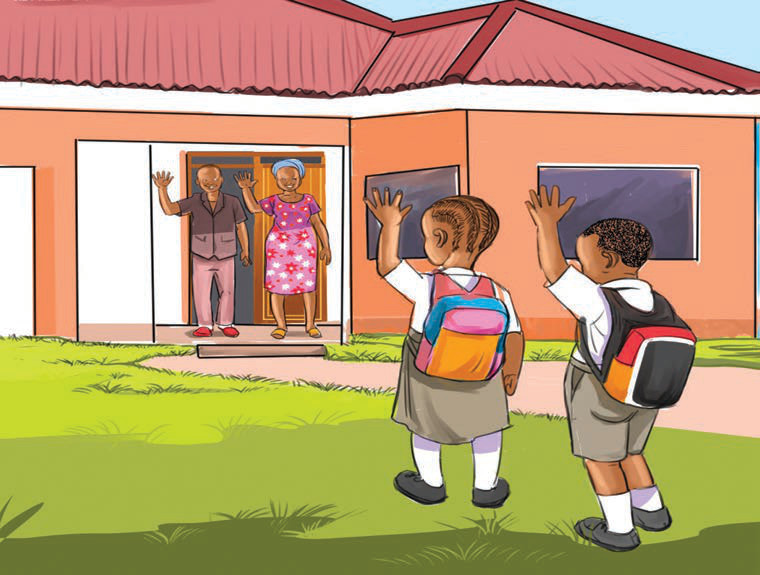

Haki za mtoto ni pamoja na:
(a) Kuheshimiwa na kuthaminiwa kama watu wengine;
(b) Kuishi na wazazi na walezi wake bila kubaguliwa;
(c) Kupatiwa mahitaji yake muhimu kama vile chakula, huduma za afya, mavazi na malazi kwa ajili ya ustawi wake;
(d) Kutoa maoni, mawazo, kusikilizwa na kutoa uamuzi wa ustawi wake;
(e) Kupata jina na utaifa wake;
(f) Kutoajiriwa katika ajira za aina yoyote;
(g) Kunufaika na kutumia kwa uangalifu mali za wazazi wake;
(h) Kwenda shule na kupata elimu bora kama inavyoonekana katika Kielelezo namba 8;
